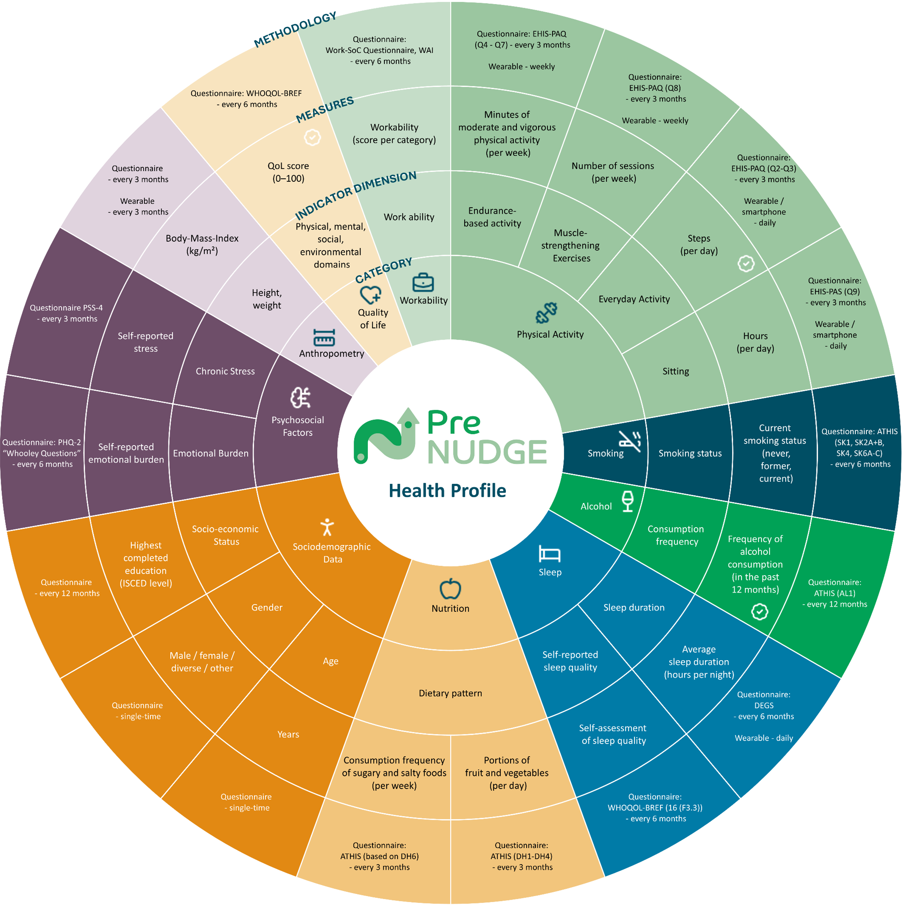
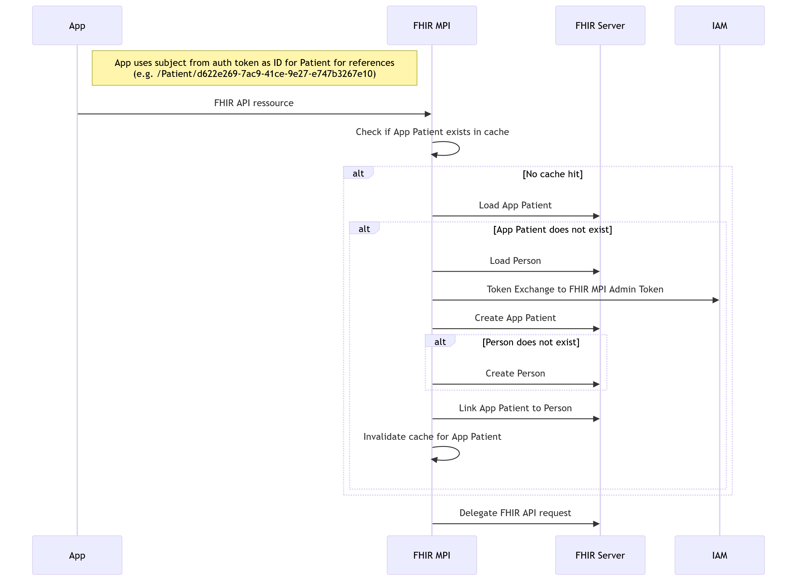
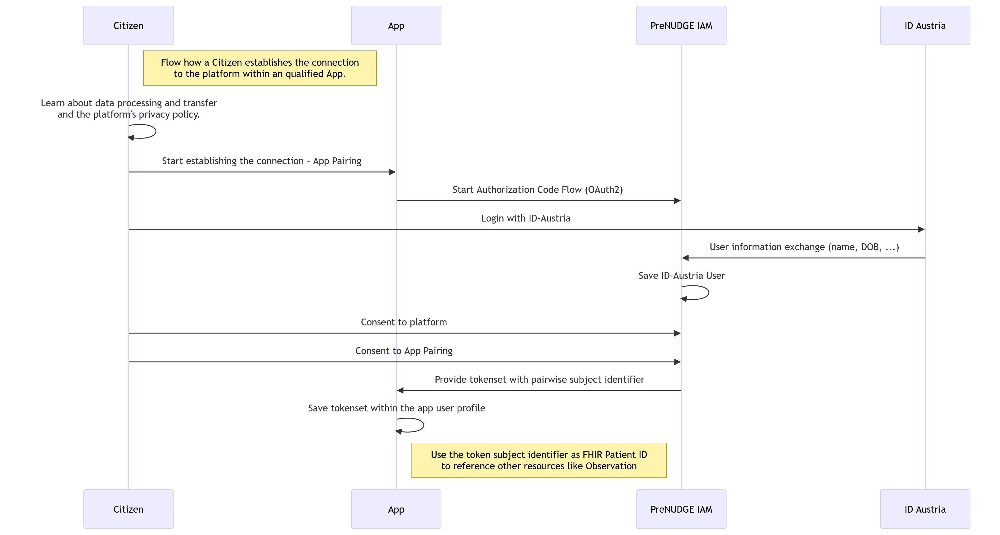

This fragment is not visible to the reader
This publication includes IP covered under the following statements.
|
PreNUDGE_Health_Profile_FHIR_IG.png  |
|
PreNUDGE_Vision.png
|
|
flow_create_patient.png  |
|
flow_pair_app.png  |
|
logo.png |
|
tree-filter.png
|